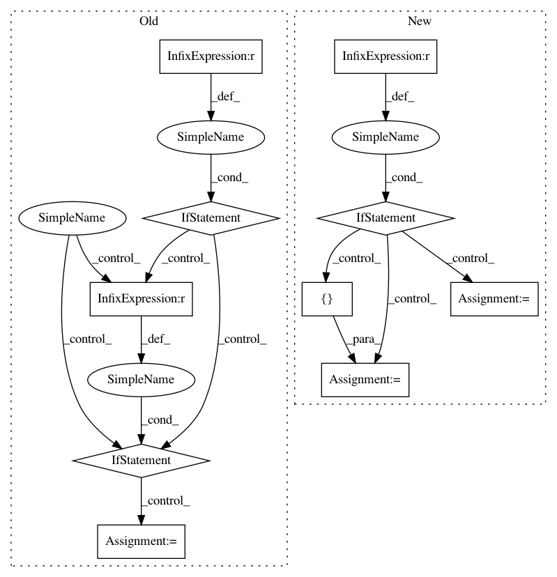

700abc65fd2172a2c6809dd9b72cf50fc2407772,allennlp/models/encoder_decoders/composed_seq2seq.py,ComposedSeq2Seq,__init__,#ComposedSeq2Seq#Any#Any#Any#Any#Any#Any#Any#,48
Before Change
self._encoder = encoder
self._decoder = decoder
if self._encoder.get_output_dim() != self._decoder.get_output_dim():
raise ConfigurationError(
f"Encoder output dimension {self._encoder.get_output_dim()} should be"
f" equal to decoder dimension {self._decoder.get_output_dim()}."
)
if tied_source_embedder_key:
// A bit of a ugly hack to tie embeddings.
// Works only for `BasicTextFieldEmbedder`, and since
// it can have multiple embedders, and `SeqDecoder` contains only a single embedder, we need
// the key to select the source embedder to replace it with the target embedder from the decoder.
if not isinstance(self._source_text_embedder, BasicTextFieldEmbedder):
raise ConfigurationError(
"Unable to tie embeddings,"
"Source text embedder is not an instance of `BasicTextFieldEmbedder`."
)
source_embedder = self._source_text_embedder._token_embedders[tied_source_embedder_key]
if not isinstance(source_embedder, Embedding):
raise ConfigurationError(
"Unable to tie embeddings,"
"Selected source embedder is not an instance of `Embedding`."
)
if source_embedder.get_output_dim() != self._decoder.target_embedder.get_output_dim():
raise ConfigurationError(
f"Output Dimensions mismatch between" f"source embedder and target embedder."
)
self._source_text_embedder._token_embedders[
tied_source_embedder_key
] = self._decoder.target_embedder
initializer(self)
@overrides
def forward(
After Change
encoder: Seq2SeqEncoder,
decoder: SeqDecoder,
tied_source_embedder_key: Optional[str] = None,
initializer: InitializerApplicator = InitializerApplicator(),
**kwargs,
) -> None:
super().__init__(vocab, **kwargs)
self._source_text_embedder = source_text_embedder
self._encoder = encoder
self._decoder = decoder
if self._encoder.get_output_dim() != self._decoder.get_output_dim():
raise ConfigurationError(
f"Encoder output dimension {self._encoder.get_output_dim()} should be"
f" equal to decoder dimension {self._decoder.get_output_dim()}."
)
if tied_source_embedder_key:
In pattern: SUPERPATTERN
Frequency: 3
Non-data size: 10
Instances
Project Name: allenai/allennlp
Commit Name: 700abc65fd2172a2c6809dd9b72cf50fc2407772
Time: 2020-02-03
Author: mattg@allenai.org
File Name: allennlp/models/encoder_decoders/composed_seq2seq.py
Class Name: ComposedSeq2Seq
Method Name: __init__
Project Name: keras-team/autokeras
Commit Name: 13aa31bc1a0b87d6c4b5e787c9b041ec83831c34
Time: 2020-07-31
Author: jin@tamu.edu
File Name: autokeras/blocks/reduction.py
Class Name: SpatialReduction
Method Name: build
Project Name: microsoft/nni
Commit Name: aa51e79cdbcbedbedeef68bcef646b2d43993753
Time: 2019-11-25
Author: Quanlu.Zhang@microsoft.com
File Name: src/sdk/pynni/nni/ppo_tuner/ppo_tuner.py
Class Name: PPOTuner
Method Name: _actions_to_config